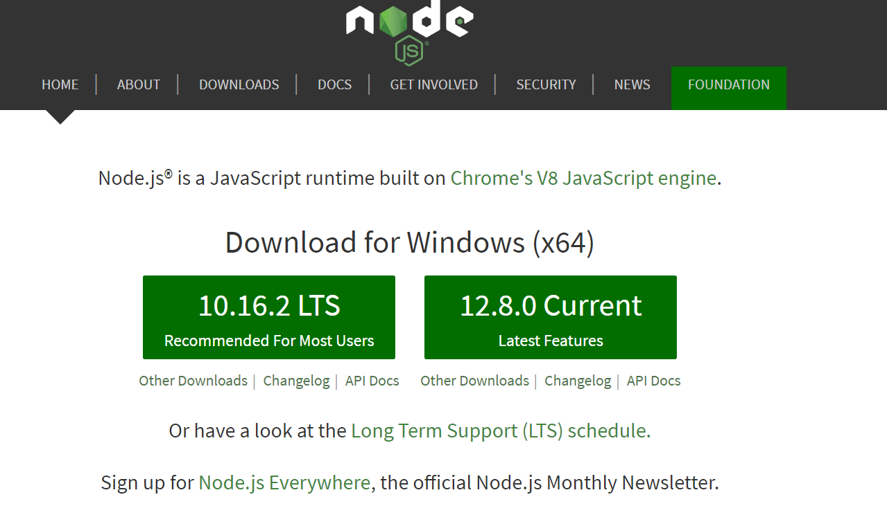
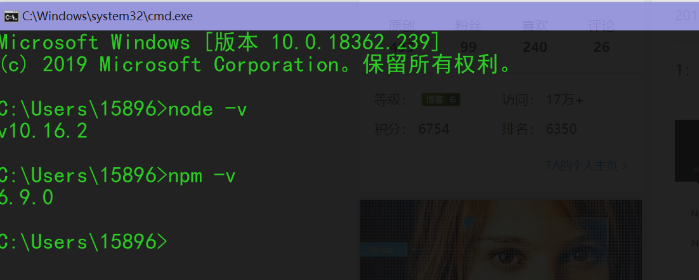
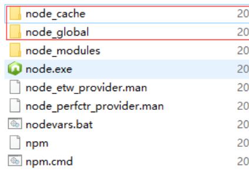
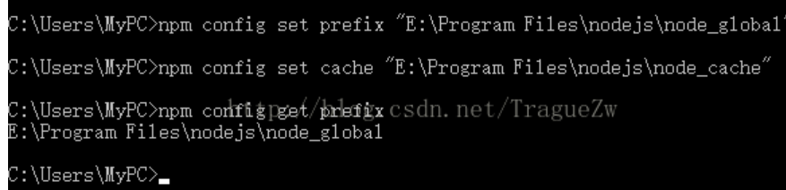
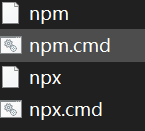
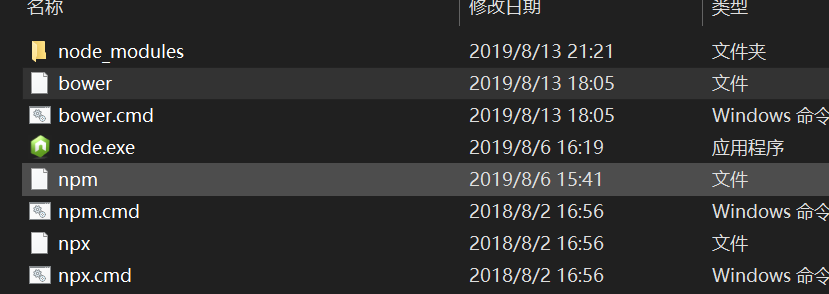
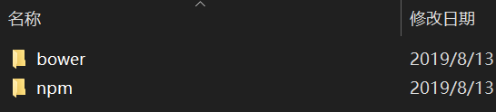
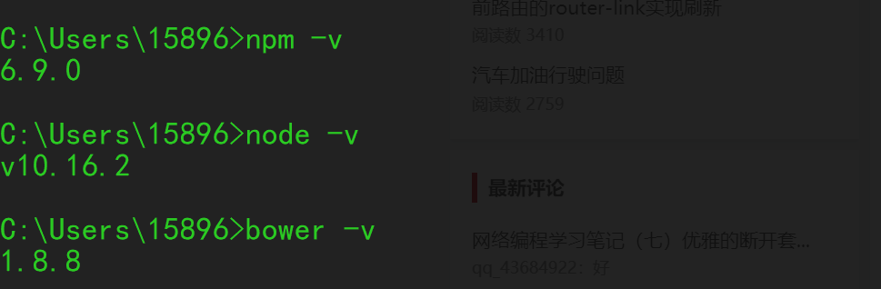

参考文章 https://blog.csdn.net/qq_33362864/article/details/80431162，感谢博主的文章
1.第一步：下载
下载Node.js，网站链接：点我，左侧为稳定版，右侧为最新版，推荐稳定版

2.第二步：安装
安装Node.js，运行下载后的.msi文件，一路下一步就行。并记录安装位置，我的安装位置是：C:\Program Files\nodejs。运行”node -v”和”npm -v”命令进行查看。

如执行结果为上图所示出现版本号，说明安装成功，若出现不是内部命令的错误，则进入Node.js安装目录，执行此命令
3.第三步配置
进入安装目录C:\Program Files\nodejs（我的），新建文件夹”node_cache”和”node_global”

执行以下命令：
1 | npm config set prefix "C:\Program Files\nodejs\node_global" |
并使用
1 | npm config get prefix 查看设置 |
例图（网上的）

4-1.安装模块bower
尝试安装bower，第一次安装时使用：”npm install bower-g”，一直报错404，无法安装成功。
后来更改命令为：”npm install -g bower”仍然报错安装失败。分析认为是权限不足导致（我安装在C盘）。
使用管理员权限启动cmd，运行 “npm install -g bower”，安装成功
然后执行bower -v，发现如下错误：
1 | ’bower’ 不是内部或外部命令，也不是可运行的程序或批处理文件。 |
4-2.处理bower无法调用问题
1.第一步配置环境变量：
步骤一：新建系统变量
变量名：NODE_PATH
变量值： C:\Program Files\nodejs\node_global\node_modules
步骤二：修改系统变量—>环境变量
C:\Program Files\nodejs\node_global
修改为
C:\Program Files\nodejs\node_global\node_modules
步骤三：
复制C:\Program Files\nodejs下的node.exe 到C:\Program Files\nodejs\node_global下
复制C:\Program Files\nodejs\node_modules下的npm到C:\Program Files\nodejs\node_global\node_modules
复制C:\Program Files\nodejs下的四个关于npm的文件到C:\Program Files\nodejs\node_global

结果：

和

验证

全部安装成功！
注意事项:
主要有以下几点，以下几点正确，不用非得和上文设置一样
1：设置global路径，即全局安装时的路径
2：环境变量NODE_PATH值为 global路径下/node_modules
3：环境变量PATH 关于 node值为 global路径
4：node.exe要在PATH指定的路径下
5：npm要在NODE_PATH制定的路径下